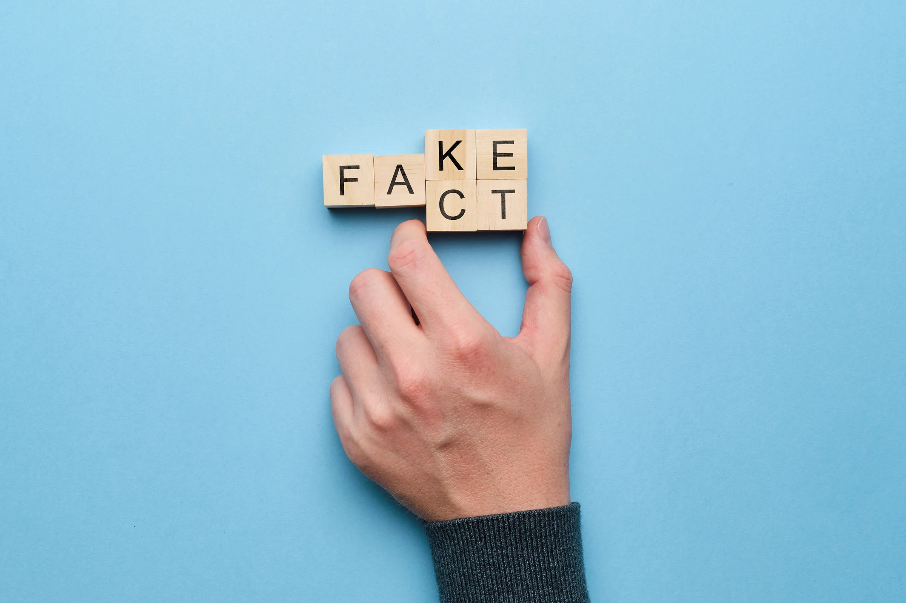
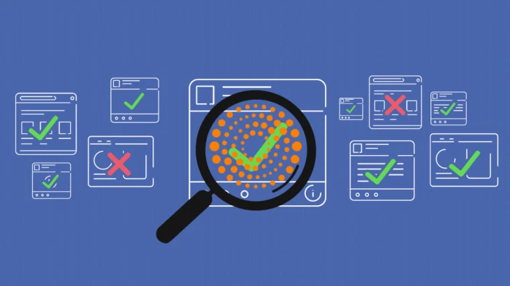

Fake news is seeping its way into society, spreading falsehoods and manipulating its readers through fear and urgency. Fake news is defined as fabricated information that mimics news media content without the editorial norms and processes for ensuring accuracy and credibility of information (Lazer et al., 2018). It is parasitic on standard news outlets, both benefiting from and undermining their credibility.

Social media platforms act as a key conduit for fake news sites, as the ease of creating fake profiles makes impersonation trivial (Allcott & Gentzkow, 2017). About 67% of Americans report getting news from social media (Shearer & Gottfried, 2017). In fact, the most popular fake news stories in the last three months of the presidential campaign generated more engagement on Facebook than the top real news stories.
The rise of fake news is recent, but is not a novel occurrence. After the widespread use of propaganda in World War I, journalists moved to be more objective and focused on building public trust and credibility. This trust has been severely eroded due to the internet, where the competition has a much lower cost of entry to distribute information. What was once gatekept by large news corporations can now be done by anyone with a computer and an internet connection. The lack of trust in news reached a historic low in 2016, with 51% of Democrats and 14% of Republicans expressing “a fair amount” or “a great deal” of trust in mass media as a news source (Swift, 2016).
Part of the problem with fake news is how easily it spreads. False information on Twitter is typically retweeted by many more people, and far more rapidly, than true information, especially when politics is the topic. This phenomenon of virality is hard to combat, as it is incredibly hard to find each person that was exposed to the falsehood and convince them of the truth. Surprisingly, robots accelerate the spread of true and false news at the same rate, implying that false news spreads more than truth because of humans (Vosoughi et al., 2018). How can we prevent this spread, if we are the ones causing it?

Fact checking has been adopted by many websites to evaluate the veracity of claims posted on the internet. Despite its prevalence, it struggles to combat the spread of fake news. This occurs for a couple of reasons. Individuals will only seek to explore a claim’s accuracy if it disagrees with their inner beliefs or they are incentivized to do so. Typically, readers ingest information without thinking critically about its source, especially on informal, social platforms. Further, people are prone to confirmation bias and desirability bias. They prefer information that confirms their preexisting beliefs, and are inclined to accept information that pleases them (Swift, 2016).
A study found that fact-checking might be counterproductive, as familiarity bias in politics has shown that people tend to remember information and how they feel about it rather than the context it was learned. By repeating the false claim, it might increase the reader’s likelihood of accepting it as true. By fact-checking a claim, you run the risk that it might be spread even further than if the claim were to fade away (Lewandowsky et al., 2017).
Another longer-term approach is to improve an individual’s ability to evaluate information sources. There has been an effort to teach critical-information skills to middle and high school students in the past few years. This can be especially helpful when the students are taught how information can be warped based on the perspective of who is presenting it. However, it is not yet clear whether these efforts are effective and if they will continue in the future (Jones, 2017).

The definition of fake news is quite simple in principle, but determining whether an article is false can be complex, even for humans. For the majority of articles, there is usually a mix of truthfulness and falsehood. The threshold for flagging a news article as fake news varies from reader to reader. Because of the political polarization leading up to and during the 2016 election, fake news became associated with a politician’s opposing viewpoint instead of false information. Additionally, there is content that does not contain falsehoods but is labeled as such because it attempts to persuade the reader, instead of inform.
There are those that argue that fake news should be defined as a continuum rather than a binary variable, as biased news exists somewhere in between fake and real. While it may be using real sources, the conclusions it draws might be dubious or opinionated. But it would be an exaggeration to call this fake news. Many fact-checking sites have a continuum like this, but again, these rely on humans and require a lot of time to ingest the vast amount of claims being published every day.
The best case is to create a model that is able to detect fake news before it is published, effectively stopping the spread before it causes damage. This approach is difficult to implement, and could impede the first amendment. Facebook and Google have been attempting to introduce a filter for fake news, but their attempts are still in their infancy and their platforms are still maintained by humans, who make many mistakes on their own. If a model could be successfully built, platforms such as Facebook or Twitter could vet links in posts before they are sent, effectively preventing the dissemination of misinformation.
Fact checking is a labor intensive process with no clear road to automation. If we want to build a model to accurately identify fake news without examining the actual claims that it makes, we can instead look at how the document is written.
Stylometry (greek stylos (style) + metron (measure)) is a method of studying linguistic style, and has been applied in a variety of fields from art (literature, music, painting) to security affairs and economics(Belak et al., 2008). Content is quite easy to copy (such as A Starry Night - while I could not paint a very good replica, I could get close enough for you to make the connection between the two paintings), imitating style is almost impossible. In art, techniques have been developed to distinguish details such as brush patterns, canvas thread count, and paint composition (Liu et al., 2016). Stylometric analysis in literature typically focuses on determining authorship, but could be extended here to determine the intuitive differences between real and fake news articles. Let’s take a look at a couple examples to see how they differ.
The data used in this article were combined from the collection of real/fake data scraped and labeled in (Ahmed et al., 2017; Horne & Adali, 2017; Silverman, 2016). In total, it contains ~38,500 news articles with a title, body, and label included.

To get a better idea of what separates fake and real news, let’s look at the distinguishing words that each type uses and how common each is within the respective articles. The wordcloud below shows the difference between the words chosen between fake and real news articles. The size of each word is the relative frequency that it appears against the other document. That is to say, if fake news uses a word more than real news, it will appear on the fake news side, and its size will be determined by how many more times it was used, and how frequently other words were used. Let’s take a look.

We can see that fake news mentions Trump, Obama, and Hillary more than real news. Real news seems to put more perspective into their articles, using words that imply a global view such as “minister,” “U.S.” “China,” and “Korea.” Additionally, we can see context clues that real news is time aware, frequently mentioning the day of the week such as “Tuesday,” “Wednesday,” and “Thursday.”
With this information, we can determine which words are more likely to be associated with fake and real news, and feed that into a model that will predict whether an article is real or fake. We will use Craig’s Zeta to gauge word preference between document types, a stylometric formula described by Burrows (Burrows, 2006). As words approach the left side of the chart, they are used more in fake news, and as they approach the right side of the chart, they are used more in real news.

Overall, these words match with intuition. Fake news sensationalizes the information (hate, racist, truth, apparently) and real news speaks to a more global scale (ministry, region, trade, UN, negotiation). With these words, we can take the top 300 words and attempt to predict whether an article is true or not.
Overall, the model that was able to predict with 95% accuracy whether a given article is fake or not. This is a great proof of concept that the future of disinformation protection looks more and more like algorithmically detecting fake news before it is spread, rather than fact checking.
There are a few caveats to this result, of course. The dataset is far from perfect – and is quite homogeneous (many of the articles are sources from the same couple news sites). A wide gamut of news articles needs to be tested to see if this methodology is effective. Additionally, the mere creation of a model such as this can create a feedback loop that results in the model performing poorly over time. This is more likely if the parameters are known to the fake news article writers, as they can change their style to avoid detection. This type of cat and mouse game will always be present, but especially with fake news and spam there will never be a perfect solution that works for every single case.
As we progress into the next presidential election and more social media platforms are created and destroyed, the emphasis for dealing with fake news must shift from a reactive approach (fact checking) to a proactive approach (algorithmic detection) to effectively deal with the dissemination of false information. Those implementing these solutions must be careful to avoid censorship, but this line is present with any type of online or offline moderation of content.